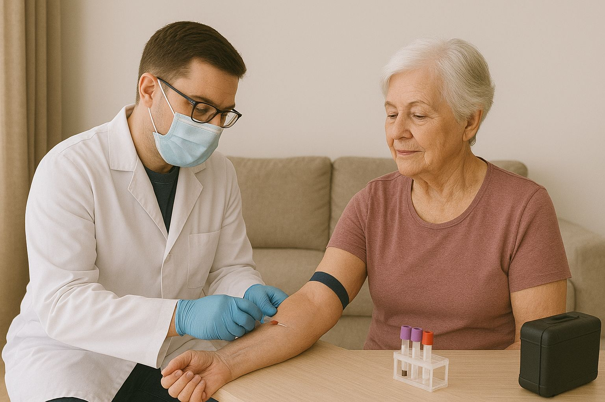

Extracción a domicilio
Para pacientes con movilidad reducida o dificultad de traslado.
Más de 50 años de experiencia cuidando tu salud con resultados confiables y atención personalizada
Desde 1973 trabajamos en Azul brindando análisis clínicos con precisión, calidad y calidez humana.
Somos un grupo de bioquímicos y técnicos especializados, en constante actualización, comprometidos con la atención personalizada de cada paciente.


Estamos acreditados por la Fundación Bioquímica Argentina (FBA). Esto asegura trazabilidad, resultados confiables y entrega de resultados en tiempos óptimos.
El laboratorio se encuentra acreditado por la Fundación Bioquímica Argentina (FBA) según las Normas del Manual MA3 del Programa de Acreditación de Laboratorios (PAL); este Programa de Acreditación de FBA se basa en la evaluación, mediante auditorías, de estándares de estructura, procesos y resultados, constituyendo la acreditación un Símbolo de Garantía de la calidad.
Para pacientes con movilidad reducida o dificultad de traslado.
Profesionales capacitados para brindar contención y una experiencia positiva a los más chicos.
Hacelo en 3 pasos:
Cada estudio puede requerir preparación especial (ayuno, horarios, etc.). Consultanos antes para asegurar resultados confiables.
Atendemos todas las obras sociales en convenio con Federación Bioquímica Argentina (FABA) y el Círculo de Analistas Clínicos de Azul.
Requisitos para su atención:
Presentación del DNI + Carnet de la Obra Social.